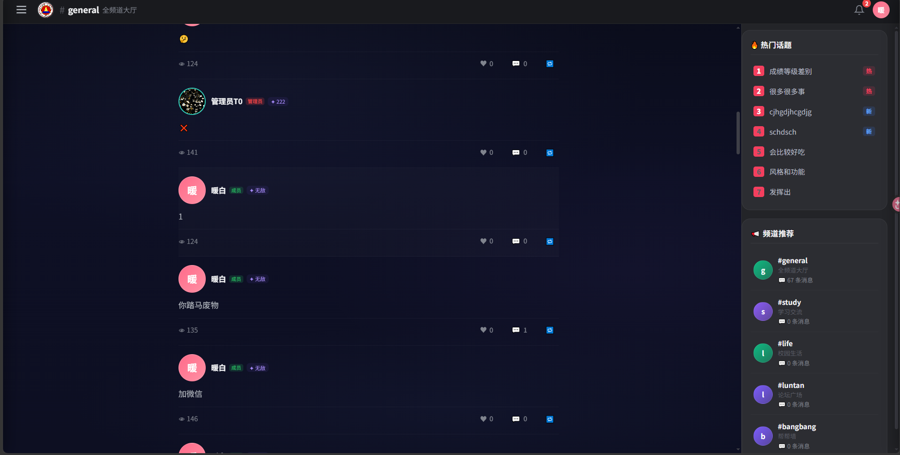

基于全网聊天应用 UI 趋势与爆款案例，为「背景太灰」问题提供可落地、可自定义的设计方案。

从现有主界面截图可见，背景存在以下问题：
#main-bg 使用 #0a0c1a → #0e1025 → #0d0f22 的线性渐变，三个色阶非常接近，整体发灰、发闷。结论：需要在保持可读性的前提下，引入更丰富的色彩层次、可感知的动态元素，以及「用户可自定义背景」的能力。
综合 Dribbble、Behance、Discord 主题社区、QQ 频道设计指南等来源，提炼出以下方向：
| 趋势 | 关键词 | 适合校园频道的理由 |
|---|---|---|
| 低饱和深色 + 彩色光晕 | 深夜暖灯、蓝紫极光、暗调 | 护眼、不抢聊天内容风头，同时打破单调 |
| 毛玻璃面板 | backdrop-filter、玻璃拟物 | 让消息卡片与背景自然分离，提升层次感 |
| 极光 / 网格渐变 | mesh gradient、aurora | 背景有流动感，比纯色渐变更高级 |
| 可自定义壁纸 | 上传图片、亮度/模糊调节 | 直接满足用户「随意更换」需求 |
| 克制动态粒子 | 呼吸光点、微流星、雨滴 | 增加氛围感，但避免过度动效干扰阅读 |
| 主题化底纹 | 校园、星空、几何、国风 | 贴合「宝丰一高」校园场景，增强归属感 |
优点：实现简单、切换无延迟、性能最好。缺点：用户只能用系统提供的几张图/色。
优点：完全自定义、离线可用、无需后端。缺点：大图片会撑满 localStorage（上限约 5MB）。
优点：可跨设备同步、支持大文件/视频壁纸。缺点：需要后端接口和存储空间。
针对「背景太灰」+「随意更换」两个需求，建议采用：默认提供多套高质量主题（A）+ 用户可上传自定义壁纸（B）。
默认主题建议：
在头像弹窗的「快捷操作」区域新增「更换背景」按钮，点击后弹出设置面板，提供：主题选择、上传图片、模糊度/暗度滑块、恢复默认。
| 方案 | 视觉提升 | 自定义能力 | 实现成本 | 推荐度 |
|---|---|---|---|---|
| A 仅预设主题 | 中 | 低 | 低 | ⭐⭐⭐ |
| B 用户上传 | 高 | 高 | 中 | ⭐⭐⭐⭐⭐ |
| C 后端同步 | 高 | 高 | 高 | ⭐⭐⭐⭐ |
| A+B 组合 | 高 | 高 | 中 | ⭐⭐⭐⭐⭐ |
请确认以下问题，我将据此进入具体实现：